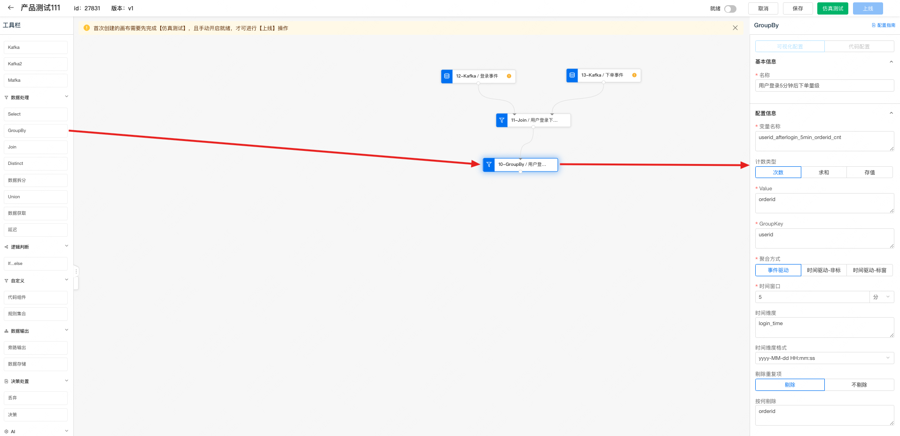
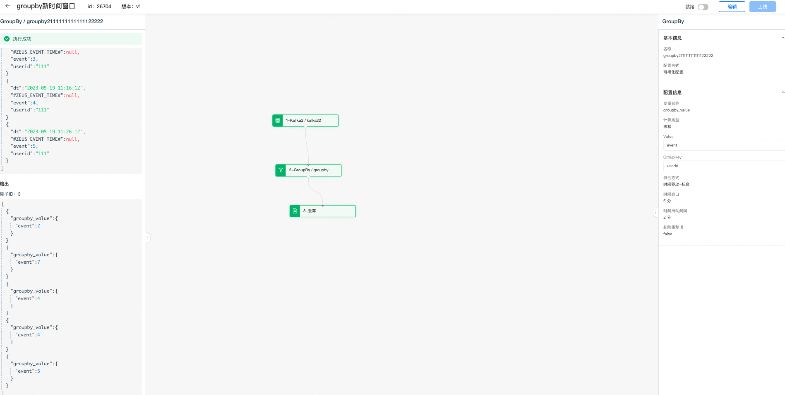

说明：画布- GroupBy组件
一、背景
Groupby 组件主要可多数据流中的数据按照用户设定的时间维度进行聚合以及聚合计算，类似累计的逻辑。近线Groupby 因技术架构实现模式，只能支持短周期的逻辑聚合，<24小时；但可以支持多数据流的关联join。
**实时的累计因子和近线的Groupby组件的区别**
可支持的逻辑相似，但又有不同，
（1）实时-累计可以支持长周期（分钟～月），但不支持多数据join ，最多能通过数据接口单维关联。比如通过选择多个累计事件可实现行union，通过数据接口可支持单维度关联判断，但对数据接口时效性有较高的要求；
（2）近线-Groupby组件可以支持短周期（24小时内），多个数据流、指定时间维度的join，相较于累计可join的范围更多。
二、名词解释
GroupBy：根据key在一定时间维度内进行数据聚合
三、Group By 多种类型的说明
|
窗口类型 |
自研/社区 |
结果触发机制 |
窗口分配机制 |
清理机制 |
窗口数据存储 |
计算函数 (含去重) |
水印机制 |
优势 |
劣势 |
典型使用案例 **限制权限画布 |
配置信息 |
|---|---|---|---|---|---|---|---|---|---|---|---|
|
事件驱动 |
自研 |
来一条触发一次 |
同keyby分组 |
基于处理时间定时触发清理 |
内存 |
|
watermark = 最新一次触发数据时的水印 |
|
|
账户安全累积策略- 满足阈值条件后立刻下发处置 |
|
|
时间驱动-非标窗 **仅限制130-反入侵使用** |
keyby分组后，从收到第一条数据开始，按滑动步长间隔触发计算 |
watermark 和 数据的关系不好对应 |
|
|
|||||||
|
时间驱动-标准窗口 |
社区 |
标准自然时间的滑动窗口 |
keyby分组后，再按滑动步长分配窗口 |
窗口触发计算后删除 |
内存 |
|
watermark = 窗口触发时间 |
|
|
社区安全特征计算- 每隔N分钟触发一次结果更新 |
|
***仍是看不懂，不理解，请联系研发@姜涛，或者提交TT工单@Zeus-nearline
四、操作指南
|
说明 |
页面 |
||||||||||||||||||||||||||||||||||||||||||||||||||||||||||||||||||||||||||||||||
|---|---|---|---|---|---|---|---|---|---|---|---|---|---|---|---|---|---|---|---|---|---|---|---|---|---|---|---|---|---|---|---|---|---|---|---|---|---|---|---|---|---|---|---|---|---|---|---|---|---|---|---|---|---|---|---|---|---|---|---|---|---|---|---|---|---|---|---|---|---|---|---|---|---|---|---|---|---|---|---|---|---|
|
【入口】 Zeus-->策略部署-->画布 【基础配置】
|
 |
||||||||||||||||||||||||||||||||||||||||||||||||||||||||||||||||||||||||||||||||
|
仿真测试 数据样例--时间驱动标窗为例
**流量入参
**计算逻辑： 时间驱动标窗的启动时间为首条数据的整点时间为起点
在实际生产执行时，只会根据流的时间产出唯一值；仿真测试为支持用户能快速验证逻辑，将过程中涉及到的全部数据都取出来，即2、7、4、4、5。 |
 |